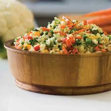

Seu Site de Receitas

Modo de Preparo:
Deixe a couve-flor picada. Adicione os ingredientes e refogue bem. Adicione sal, tampe a panela e deixe cozinhar.
Arroz de Couve-Flor
Ingredientes:
Arroz, Couve-Flor, Cebola Média, Azeite
Modo de Preparo:
Deixe a couve-flor picada. Adicione os ingredientes e refogue bem. Adicione sal, tampe a panela e deixe cozinhar.
Bolo de Café
Ingredientes:
Farinha de Trigo, Açúcar, Café Coado, Chocolate em Pó, Ovos
Modo de Preparo:
Bata o açúcar, as gemas e o café. Adicione farinha e chocolate e mexa bem. Bata as claras e junte à mistura.
Coxinha de Brigadeiro
Ingredientes:
Leite Condensado, Chocolate em Pó, Manteiga, Morango, Chocolate Granulado
Modo de Preparo:
Junte o leite condensado, chocolate em pó e manteiga. Aqueça no fogo baixo. Envolva os morangos e passe no granulado.